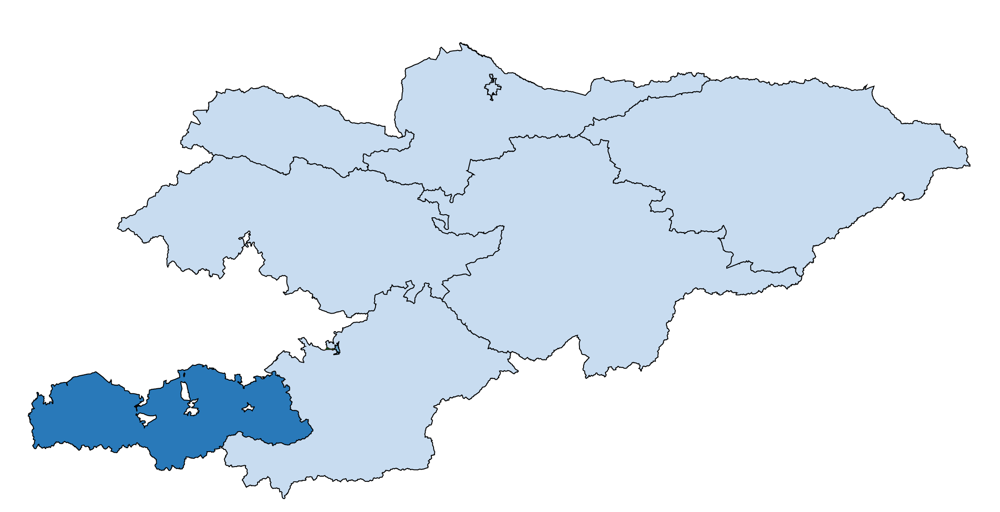

В состав Баткенской области входят 3 района, 6 городов (3 города областного значения – Баткен, Кызыл-Кия, Сулюкта и 3 города районного значения – Исфана, Айдаркен, Кадамжай), один поселок городского типа и 31 айылный аймак. 
Баткенский район – г.Баткен (центр района)
Кадамжайский район – г.Кадамжай (центр района)
Лейлекский район – г.Исфана (центр района)
г.Кызыл-Кия
г.Сулюкта